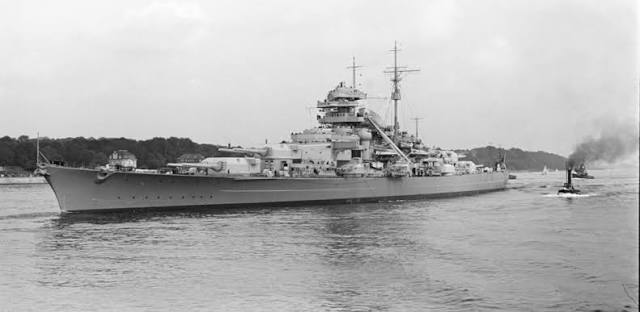

Линкор Бисмарк - грандиозный дебют и сокрушительная трагедия

«Бисмарк» — линкор кригсмарине, один из самых известных боевых кораблей Второй мировой войны. Назван в честь первого канцлера Германской империи Отто фон Бисмарка. Во время своего первого и единственного боевого похода (в бою в Датском проливе 24 мая 1941 г.) потопил британский линейный крейсер «Худ» (англ. HMS Hood), но получил повреждения от артиллерийского огня британских кораблей, вынудившие его прервать поход и, в итоге, приведшие его к потоплению в бою с превосходящими силами британского флота несколько дней спустя.
В 1989 г. затонувший линкор Бисмарк был обнаружен поисковой экспедицией в Атлантическом океане на глубине в 4800 м., став, в дальнейшем, одним из самых известных объектов подводно-археологических исследований.